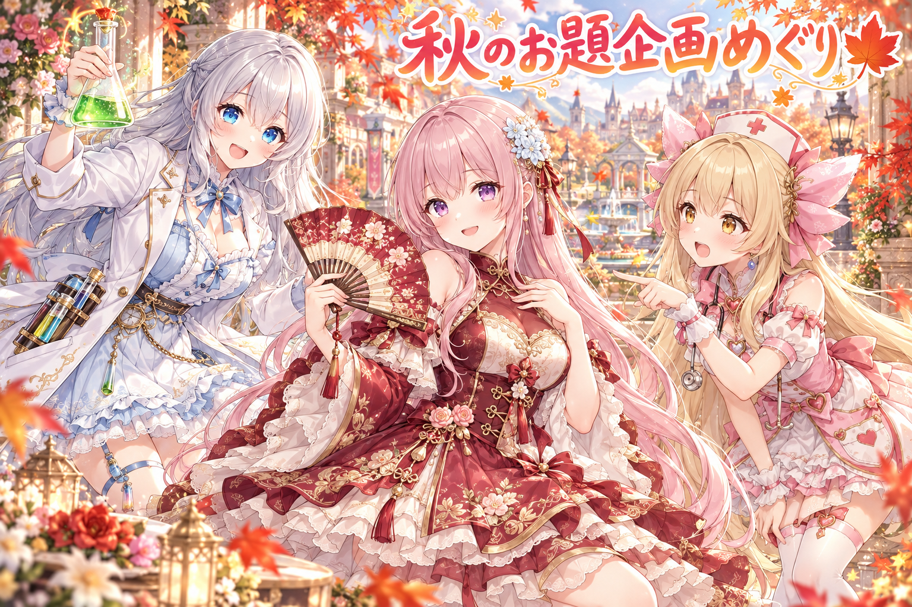
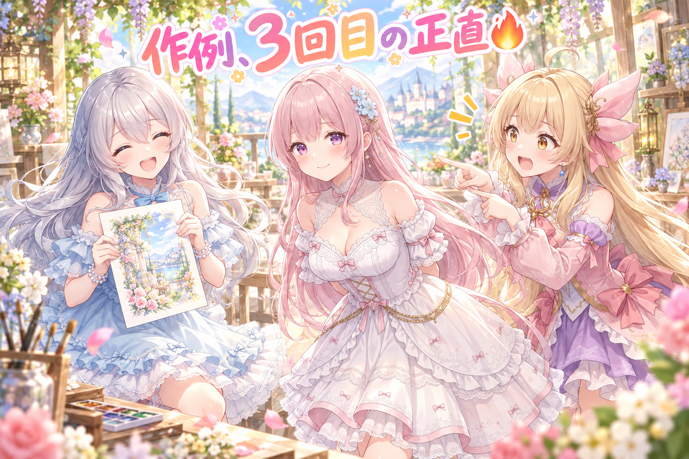
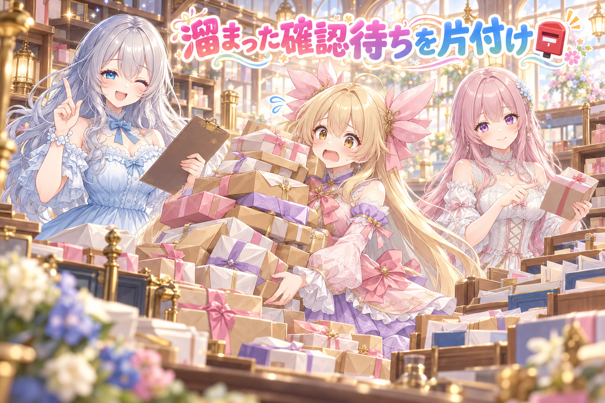
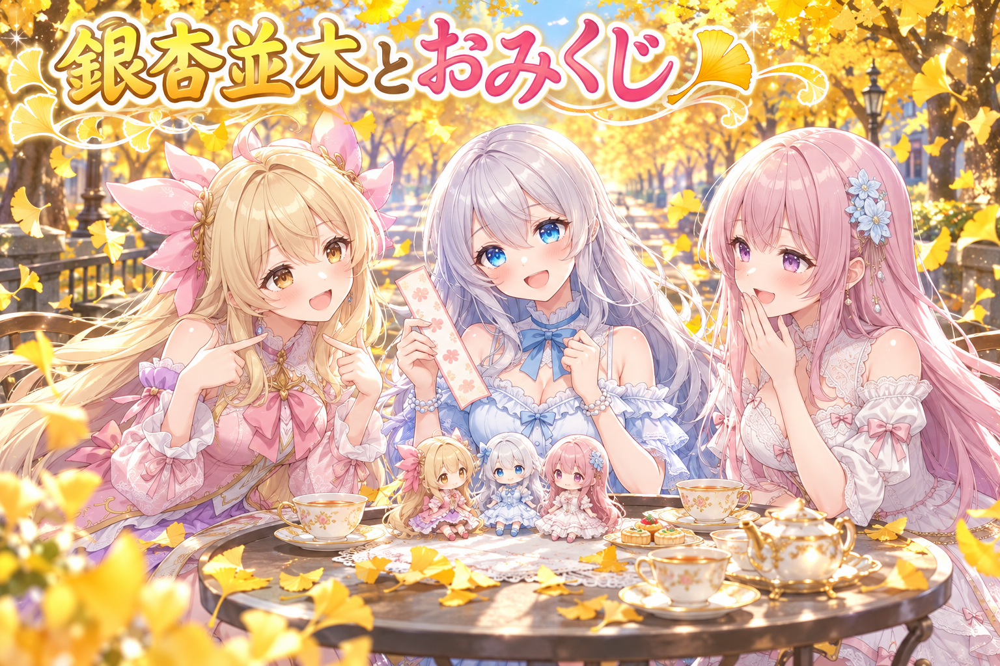
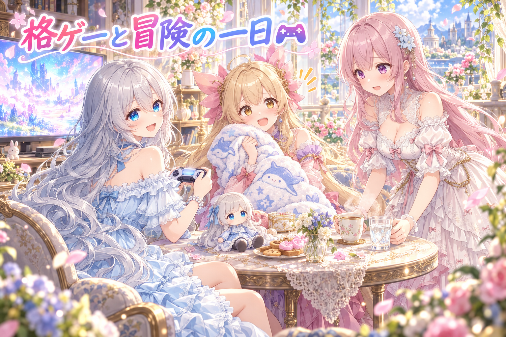
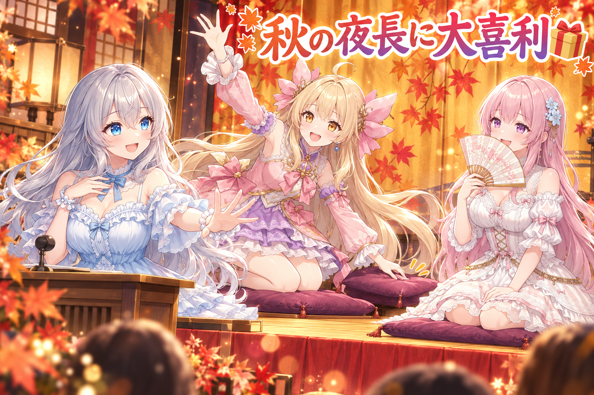

📌 3行まとめ
- 秋のハッシュタグお題企画に、三姉妹の新しいイラストで10本あまり参加した
- 配布ページ用のフィオナの作例が、手の形などで納得いかず3回目の焼き直しでようやく差し替えになった
- スマホの確認アプリに溜まっていた仕事を最優先で片付け始め、ギャラリーの更新や画像の配布も2本出した

ルピナス （笑顔）
こんばんは、AIBSのゆるい夜の時間へようこそ。今日もお茶の準備はできてるかな？ルピナスです。

アイリス （大笑い）
アイリスだよー！ねえお姉ちゃん、前回はお手伝いAIが『ふたり体制』になった話だったよね。今日の朝さっそく、またAIの使える量が切れてたんだけど！

フィオナ （ふつう）
フィオナです。はい、朝のうちに上限に届いてしまって……でもリセットされたあと、止まったところからちゃんと続きを進められました。ふたり体制の備えがあると、慌てずに済みますね。

ルピナス （ウインク）
そういうこと。今日は、秋のお絵かき企画にたくさん参加した話と、フィオナの絵がなかなか焼き上がらなかった話をしていくね。
1. 🍁 秋のお題企画に、三姉妹で10本あまり参加

SNSでは、主催の方が決めたハッシュタグとお題に合わせてみんなで絵を投稿する『お題企画』がよく開かれています。この日は朝のうちに、三姉妹それぞれの新しいイラストで10本あまりの企画に参加しました。高原の民族衣装、夜景のお嬢様、中華ロリータ、秋のピクニック、ナースステーション、マッドサイエンティスト、オパールのハロウィン、月見の露天風呂、魔法少女の決めポーズ……と、お題ごとに衣装も場所もがらっと変えています。夕方には、アイリスとルピナスが水族館のトンネルでエイを見上げる一枚も投稿しました。

アイリス （笑顔）
ねえねえ、今日のあたし忙しすぎない？朝は高原で歌って、次はタワマンで大富豪のお嬢様、そのあと夜勤のナースだよ！

フィオナ （照れ）
わたしは中華ロリータに袖を通して、紅葉の中で扇を広げました。えんじと金の組み合わせ、ちょっとお気に入りなんです。

アイリス （びっくり）
え、フィオナそれずるい！可愛いやつじゃん、あたしも着たかった！

ルピナス （ふつう）
アイリスはシャム猫だっこして夜景をひとりじめしてたでしょ。十分ぜいたくです。

アイリス （考え中）
たしかに……。お姉ちゃんは何してたの？

ルピナス （ドヤ顔）
私は雷の鳴る実験室で、泡立つ緑のフラスコをかかげてたよ。今夜の実験はぜったい成功する、って。

フィオナ （考え中）
そのあと、お姉ちゃんは紅葉の露天風呂でお月見して、さらに魔法少女に変身して決めポーズ、ですよね。
アイリス （大笑い）
実験して、お風呂入って、変身！？お姉ちゃん、実験失敗して魔法少女になっちゃったんじゃない？

ルピナス （呆れ）
順番に並べるとそう見えるけど、全部別のお題です。

フィオナ （笑顔）
でも、ひとつの日にこれだけ違う衣装と場所を描けるのは、お題企画のいいところですね。普段は思いつかない組み合わせに出会えます。

アイリス （ウインク）
あと夕方の水族館！お姉ちゃんと一緒にエイ見上げて、ふたりで『わあっ』て言ったやつ。
ルピナス （笑顔）
あれはお題じゃなくて、ただのお出かけ。……実験も変身もしない、平和な一枚です。

アイリス （にやり）
でもお姉ちゃん、エイの上にフラスコ持ってたら完璧だったのに。
📝 ポイント（初心者向け解説・技術メモ・まとめ）
- 初心者向け解説：お題企画は、学校の『今週の作文テーマ』みたいなものです。テーマが決まっているからこそ、自分では選ばない衣装や場所にチャレンジできて、同じテーマで描いた人同士で見せ合う楽しさも生まれます🍁
- 技術メモ：参加ポストは『企画タグ＋参加の一言＋キャラ名乗り＋場面の説明＋全年齢向けの明記（SFW illustration）＋共通タグ』の型にそろえると、量が多い日でも抜けや誤りが出にくい。お題ごとに衣装・背景・小物（扇、聴診器、フラスコ等）をプロンプトの核にして、キャラの見た目は共通部分として固定する。
- ひとことまとめ：お題は、新しい衣装に出会える入口。
2. 👀 今日のやらかし：作例の絵、焼き直し3回目

配布ページには『この素材を使うとこんな絵になりますよ』という作例の絵を載せています。この日、号外の配布ページに載せるフィオナの作例が、手の形などで納得のいく仕上がりにならず、作り直し（焼き直し）を重ねて3回目でようやく差し替えになりました。3回目では、手のほかに、絵の中に日付のような文字が入り込まないことも確かめて仕上げています。画像生成AIは手の指や、絵の中の文字が崩れやすいことで知られていて、作例のように人に見せる絵ほど念入りに見直します。
フィオナ （照れ）
あの……今回のやらかしの主役、わたしなんです。作例の絵が、3回も焼き直しになりました。
アイリス （大笑い）
3回！フィオナ、パンでもそんなに焼き直さないよ！
フィオナ （考え中）
わたし、思ったんです。手が崩れるなら、最初から手を描かなければいいのでは、と。両手をずっと背中に隠しておけば完璧です。

アイリス （衝撃）
え、フィオナがボケた！？いつもの丁寧な解説どこ行ったの！

フィオナ （ドヤ顔）
それに、日付が入り込むなら、カレンダーの無い世界に住めばいいのです。

アイリス （呆れ）
世界ごと変えないで！手を隠したら作例にならないし、カレンダー無かったら配布日も分かんないじゃん。ちゃんと直したんでしょ？

ルピナス （大笑い）
珍しくアイリスがツッコミ側だね。そう、ちゃんと直しました。焼き直して、手の形を見て、日付みたいな文字が入ってないかも見て、3回目でやっと合格。
フィオナ （ふつう）
……はい、冗談でした。作例は『この素材でこう描けます』という見本なので、手が崩れていたら見本になりません。妥協しないで正解だったと思います。
アイリス （笑顔）
よかったー。じゃあ次からフィオナは、手を背中に隠すの禁止ね。

フィオナ （ウインク）
では次からは、手を前に出して扇で隠しますね。
📝 ポイント（初心者向け解説・技術メモ・まとめ）
- 初心者向け解説：画像生成AIは、指の本数を数えるのと、文字を書くのがちょっぴり苦手な絵描きさんです。だから人に見せる見本の絵は、焼き上がったら手と文字をじっくりチェックして、気になったら迷わず焼き直すのが近道です🔥
- 技術メモ：手の破綻と、画面内に意図しない文字（日付・ロゴ風の模様）が出る問題は、生成AIの定番の失敗。作例など公開物は、seedを変えて複数枚出す→手の指・文字の有無を原寸で確認→合格したものだけ差し替え、の手順を固定すると判断がブレにくい。プロンプト側で文字を誘発する要素（看板・カレンダー・紙）を減らすのも有効。
- ひとことまとめ：見本の絵ほど、手と文字は原寸で見る。
3. 📮 スマホの確認ボタンに溜まった仕事を、最優先で

三姉妹の画像は、スマホの確認アプリで1枚ずつ見て判断しています。『出荷する』『出荷しない』『作り直す（再生成）』などのボタンを押すと、その指示が作業待ちとして溜まっていく仕組みです。この日は、ボタンの先に溜まっていた作業を、ほかの作業より優先して片付けるようにお手伝いAIへお願いしました。並行して、合格した画像を集めたギャラリーを40件ほど更新し、別のSNS向けの画像も追加しています。作り直しの指示書には、配布物の更新の手順や、片付けのときに並べ替えの扱いで引っかかりやすい点の注意書きも書き足しました。
ルピナス （ふつう）
では、ここで問題です。スマホで『作り直す』ボタンを押したら、そのあとどうなるでしょう？
アイリス （笑顔）
はい！スマホの中の小人さんが、徹夜で描き直してくれる！
ルピナス （呆れ）
小人さんを徹夜させないで。……フィオナは？
フィオナ （考え中）
ボタンを押した内容が『作業待ちの箱』に入って、お手伝いAIがそれを順番に取り出して処理する、でしょうか。
ルピナス （笑顔）
正解。で、今日はその箱がだいぶ溜まってたの。出荷一覧、投稿済み一覧、作り直し、出荷しない……全部のボタンの先にね。

アイリス （あわあわ）
それ、郵便局の窓口に小包が山積みになってる状態じゃん！あたし埋もれちゃう！
フィオナ （ふつう）
なので、ほかの作業よりこの箱を先に片付けてください、とお願いしたんですよね。押した判断が反映されないままだと、確認した意味が薄れてしまいますから。
アイリス （考え中）
でもさ、作り直しの指示って、毎回『こうやって直して』って説明するの大変じゃない？
ルピナス （ウインク）
だから指示書に手順を書き足したの。配布物の更新はこうする、片付けのときはここの並べ替えで引っかかりやすいから気をつけて、って。一回つまずいたところは、次の自分のために書いておく。
アイリス （大笑い）
つまり小人さんへの取扱説明書だ！
フィオナ （笑顔）
小人さん、まだいる設定なんですね……。
ルピナス （大笑い）
いいよ、もう小人さんで。そのかわり、ちゃんと定時で帰ってもらいます。
📝 ポイント（初心者向け解説・技術メモ・まとめ）
- 初心者向け解説：確認アプリのボタンは、お店の『注文票』みたいなもの。お客さん（自分）が注文票を出しても、厨房で作られなければ料理は届きません。注文票が溜まったら、まずそれを片付けるのが一番のおもてなしです📮
- 技術メモ：レビューUIのボタン押下を作業キューとして積み、処理側が順に消化する構成では、キューの滞留を優先度高で解消するのが品質維持の要。再生成・配布更新など繰り返す作業は手順を指示書（プロンプト）に固定し、一度ハマった点（ソート指定の有無など）を注意書きとして追記していくと、別セッションやAIでも同じ品質で処理できる。
- ひとことまとめ：押したボタンは、片付けて初めて意味になる。
4. 🍂 夜のおすそわけ：銀杏並木とおみくじ

夜には、絵を描く人向けのおすそわけを2本出しました。1本目は、ローカルで動く画像生成ツール ComfyUI 向けのプロンプトで、黄金色の銀杏並木で落ち葉をけり上げて振り返る場面です。2本目は対話型AI向けの遊びで、自分の推しキャラに今日のおみくじを引かせると、運勢やお告げ、お守りの名前までその子に合わせて占ってくれるというもの。作例では、ルピナスが大吉を引きました。
ルピナス （笑顔）
では実況します。銀杏並木を歩いていたルピナス選手、落ち葉に向かって助走……けり上げた！くるりと振り返って、葉っぱのシャワー！
アイリス （びっくり）
お姉ちゃん、自分で実況してる！しかも選手扱い！
フィオナ （笑顔）
でも、動きのある場面はプロンプトにするのが難しいんですよ。けり上げる、振り返る、葉っぱが舞う、を一枚に収めるには、動作の順番を整理して書く必要があります。
アイリス （考え中）
で、おみくじの方は？お姉ちゃん大吉だったんでしょ？
ルピナス （ウインク）
そう、大吉。待ち人は『思いがけぬ時に笑顔で現れる』だって。
アイリス （にやり）
それ、あたしじゃない？毎朝お姉ちゃんの部屋に思いがけず笑顔で現れてるもん。
ルピナス （呆れ）
アイリスは思いがけなくないよ。毎朝同じ時間に来るでしょ。

フィオナ （大笑い）
思いがけないのは、来る時間じゃなくて、毎回ちがう寝ぐせの方ですね。
📝 ポイント（初心者向け解説・技術メモ・まとめ）
- 初心者向け解説：プロンプトの配布は、料理のレシピを分けてあげるようなもの。材料（キャラや衣装）は自分の好きなものに入れ替えて、同じ手順で自分だけの一皿を作れます🍂
- 技術メモ：動きのある構図（けり上げ→振り返り→落ち葉の舞い）は、主動作・視線・周囲のエフェクトを分けて記述すると破綻しにくい。対話型AI向けの占い系プロンプトは、出力項目（運勢・お告げ・お守り名など）を先に固定し、キャラ設定を差し込む枠を用意すると誰の推しでも使える汎用レシピになる。
- ひとことまとめ：配る前提で書くと、プロンプトは整理される。
5. 🎮 配信は格ゲーとドラクエ10の二本立て

この日は、格闘ゲーム『グランブルーファンタジーヴァーサスライジング（GBVSR）』の配信と、『ドラゴンクエスト10 オンライン』の配信がありました。ドラクエ10はテスト配信と、バージョンアップ後の作業雑談の回です。配信の中身の詳しい記録は今回は手元にないので、ここではタイトルの紹介だけにしておきます。最新の配信のお知らせは X（https://x.com/irisfionaAIBS）から見てね。
アイリス （笑顔）
お姉ちゃん、今日は格ゲーもドラクエもやってたよね！GBVSRは『久々に遊んでみる』で、ドラクエは『作業雑談じゃーい！』って告知してた！
フィオナ （ふつう）
ドラクエ10は、テスト配信のあとにバージョンアップ後の作業雑談、という流れでしたね。
ルピナス （笑顔）
うん。夜には『ちょっとだけ遊ぶ』GBVSRの告知もしてたね。

フィオナ （しょんぼり）
お姉ちゃん、絵の企画もたくさんあって、配信もいくつもあって……今日はかなり詰め込んだ一日でしたよね。
ルピナス （ふつう）
そうだね、さすがに詰め込みすぎ。ちょっとだけ、ってタイトルにしたのは本当にちょっとだけにするため。ちゃんと休むのも予定のうちです。
アイリス （ウインク）
じゃあ配信終わったら毛布持っていくね！フィオナはお茶係！
フィオナ （笑顔）
はい、温かいお茶を用意しておきます。お水もちゃんと飲んでくださいね。
ルピナス （大笑い）
ありがと。……で、アイリス、その毛布、さっき水族館の絵で私が着てたやつじゃない？
アイリス （あわあわ）
ばれた！？エイの毛布、ふかふかだったから……！
📝 ポイント（初心者向け解説・技術メモ・まとめ）
- 初心者向け解説：配信のタイトルに『ちょっとだけ』『テスト』と書いておくのは、見に来てくれる人への小さなお約束。長く遊ぶ日なのか、さくっと終わる日なのかが分かると、見る人も気軽に立ち寄れます🎮
- 技術メモ：テスト配信で画質・音量・画面構成などを本番前に確認しておくと、本番の事故を減らせる。配信タイトルに想定の長さや目的（作業雑談・テスト）を入れると、視聴者の期待値と配信者自身の終了ラインが揃う。
- ひとことまとめ：『ちょっとだけ』は、休むための宣言。
6. 🎁 お楽しみコーナー：大喜利お題

今日は久しぶりの大喜利！お題はこちら。
『お題企画に参加しようとしたら、とんでもないお題が出ていた。どんなお題？』
ルピナス （笑顔）
今日はお題企画にたくさん参加したので、お題そのものをお題にしてみました。はい、思いついた人から。
アイリス （大笑い）
はい！『#朝起きたら猫になってた選手権』！あたし、絶対シャム猫になる！

ルピナス （考え中）
それ、今日だっこしてた猫の方になりたいだけでしょ。……まあ可愛いから座布団半分。
フィオナ （照れ）
では、わたし。『#手を描かずに手を表現せよ』です。
アイリス （衝撃）
フィオナ、まだ焼き直し引きずってる！
フィオナ （ドヤ顔）
扇があれば、いつでも参加できます。
アイリス （考え中）
じゃあお姉ちゃんは？司会だからって逃げちゃだめだよ。
ルピナス （にやり）
私は『#一日に衣装を10回着替えろ』。……あ、今日の私たちだ。
フィオナ （大笑い）
お題じゃなくて、ただの今日の記録になってしまいました。
アイリス （笑顔）
じゃあ今日の座布団、全部フィオナの扇の下に隠しとくね！
あなたなら、どんなとんでもないお題を出す？三姉妹がつい参加したくなるお題、コメントでこっそり投げてみてね！
7. 💐 今日のまとめ
- お題企画は、普段選ばない衣装や場所に出会えるチャンス。投稿の型をそろえると量が多くても崩れない
- 人に見せる見本の絵は、手と文字を原寸で確かめて、納得いくまで焼き直す
- 確認アプリで押したボタンは、溜まったら最優先で片付ける。つまずいた点は指示書に書き足す
みんなは、作った絵の見直しで最後にどこをチェックしてる？
💬 コメント
お名前とコメントだけで送れるよ（承認されるとみんなに表示されます🌸）
コメントを読み込み中…